真实需求
消费者想知道这颗榴莲是否值得买，档口和团购卖家也需要更稳定的现场验货辅助。
一个基于 Android 原生技术栈、Google ADK Kotlin、Gemma 4 2B Edge 和 LiteRT-LM 的本地智能体应用。 它引导用户拍摄五角度榴莲照片，补齐重量、房数、形态和品种，并在设备端完成照片质检、分析流程编排和购买建议生成。
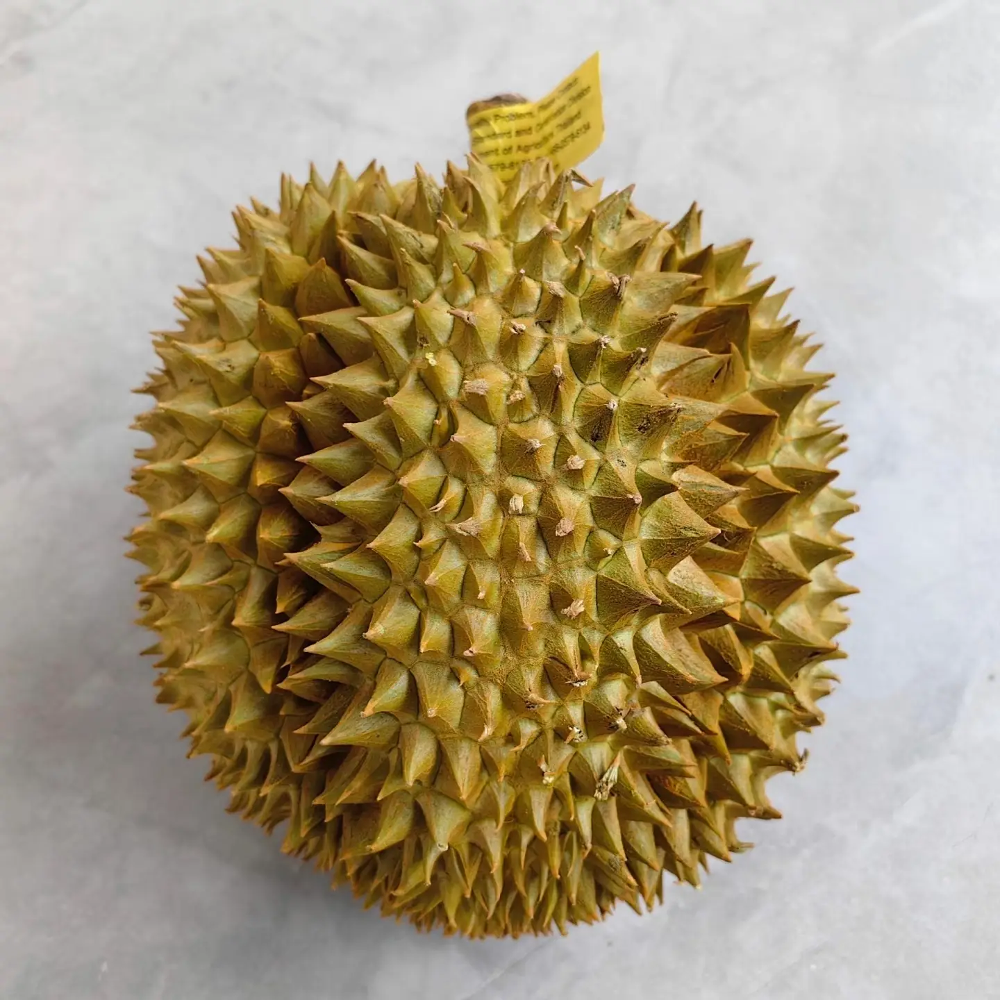
模型导入、URL 下载、ADB push、CPU/GPU 后端回退、Agent-driven UI 和 P0-P5 Demo 工具链已经形成可运行闭环。
榴莲购买是高客单价、高经验依赖的现场决策。Doran AI 把随手判断变成结构化采集和端侧推理，减少网络依赖，也保留用户照片和购买记录的隐私。
消费者想知道这颗榴莲是否值得买，档口和团购卖家也需要更稳定的现场验货辅助。
核心推理在 Android 本机运行，适合市场、商超和产地等网络不稳定场景。
五角度采集、状态机、报告 trace 和品种先验可以扩展到更多农产品质检场景。
这些能力共同构成了 Doran AI 的端侧体验：能在现场跑、能引导用户补信息，也能把分析过程和结果解释清楚。
解决榴莲现场挑选和出肉率判断问题。
Gemma 4 2B、ADK Native Function Calling、LiteRT-LM、多模态和端侧回退。
模型管理、拍照、质检、分析、报告、历史和组件。
用 Agent-driven UI 处理水果挑选这种经验型问题。
以 `AgentChatViewModel` 为状态中心，ADK Agent 负责把 Gemma 4 输出转成工具动作，LiteRT-LM 负责本地推理。
当前管线已经具备 ADK 工具链、进度事件、trace 和报告结构。其中 P1-P3 的真实 CV 计算仍是 Demo 代理值，后续可替换。
备注：演示已经部署本地gemma4模型。视频包含：Gemma 4 2B 模型管理、本地健康检查、Native Function Calling、五角度多模态照片质检、P0-P5 进度、最终报告、历史/徽章/桌面组件。
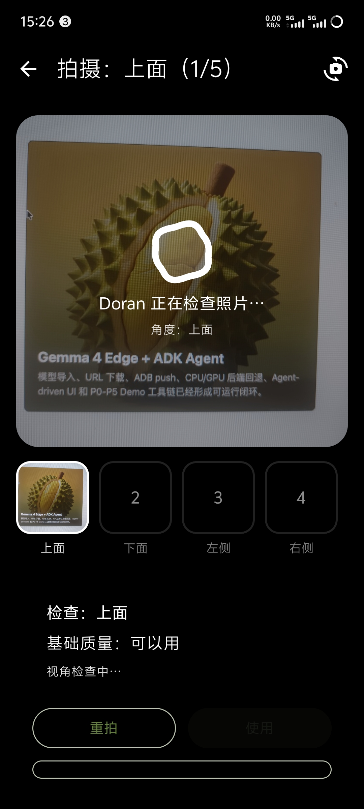
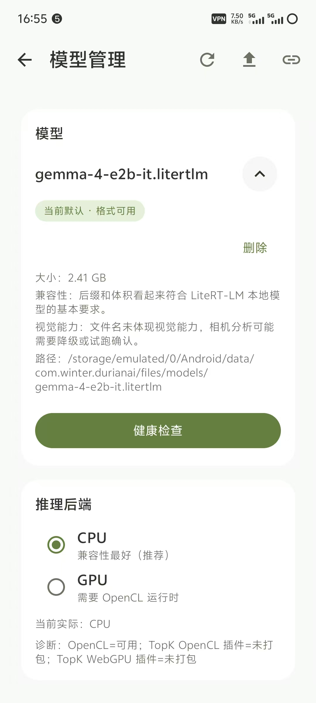
这些截图来自当前DuranAI真机演示的亮色模式、夜间模式模式、模型管理、数据统计、成就、桌面组件和其他素材。
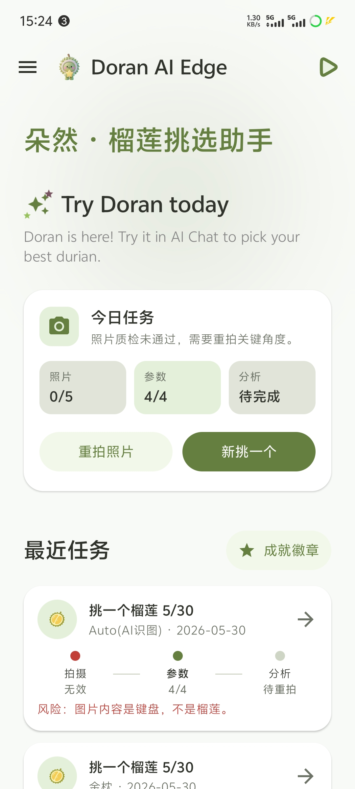
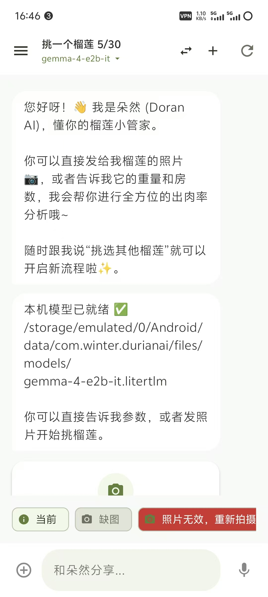
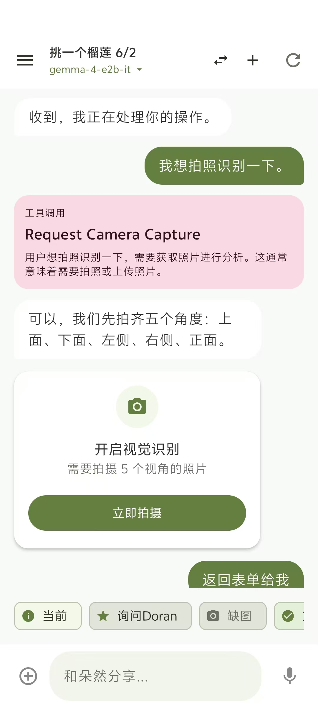
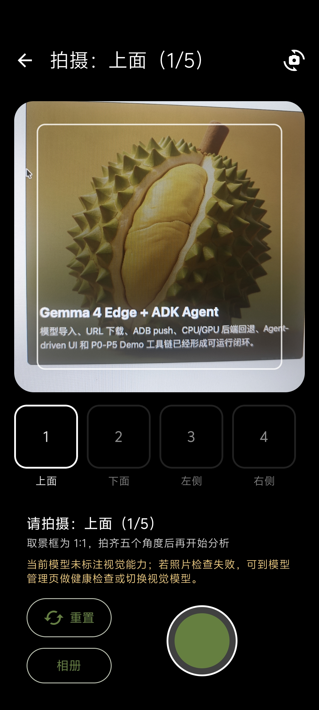
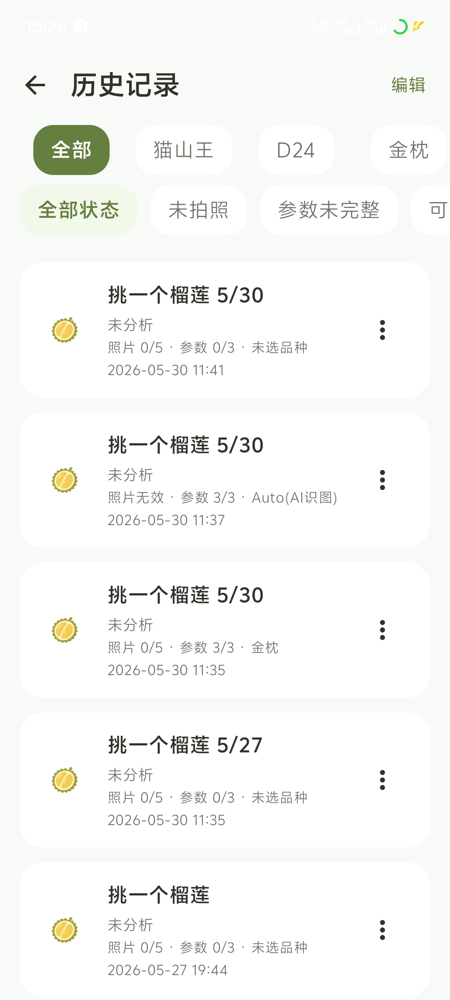
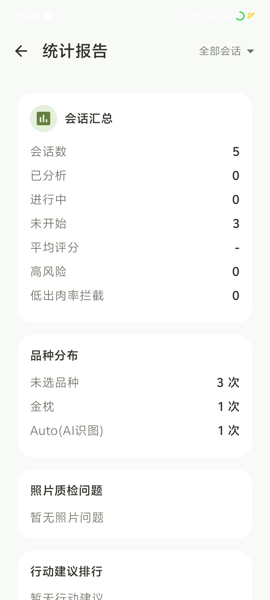
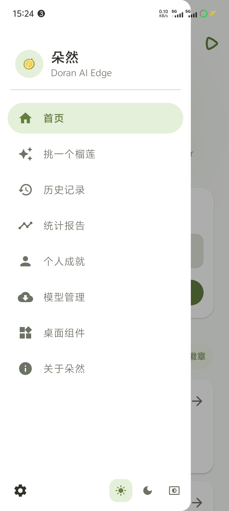
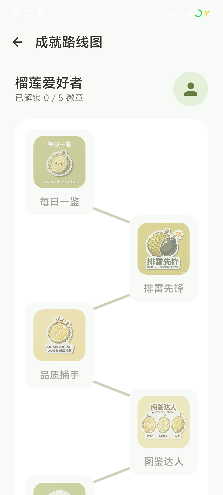
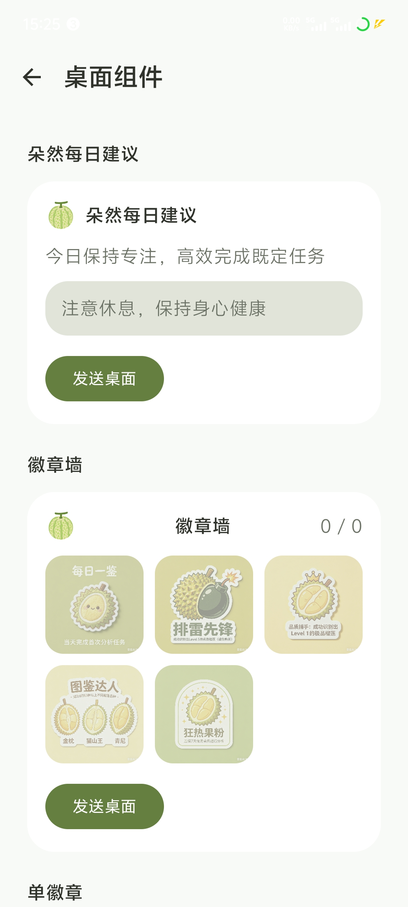
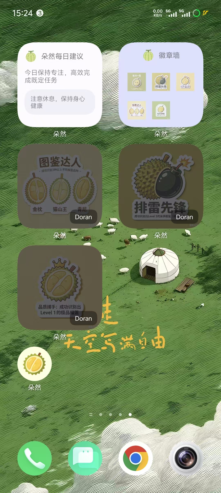
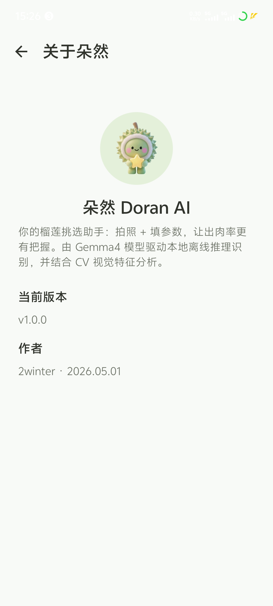
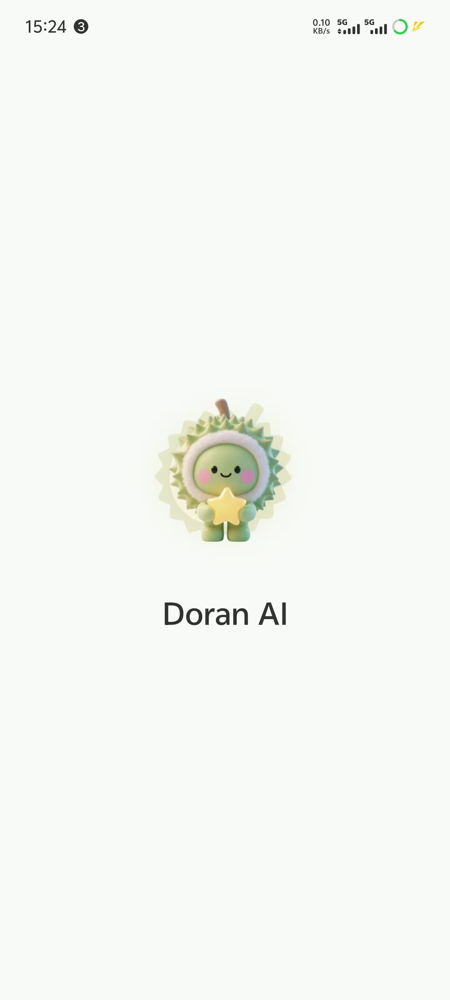
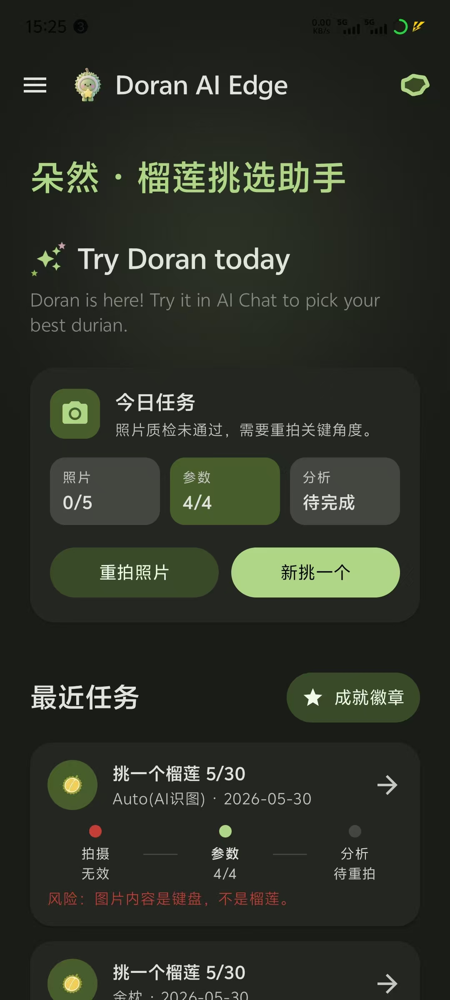
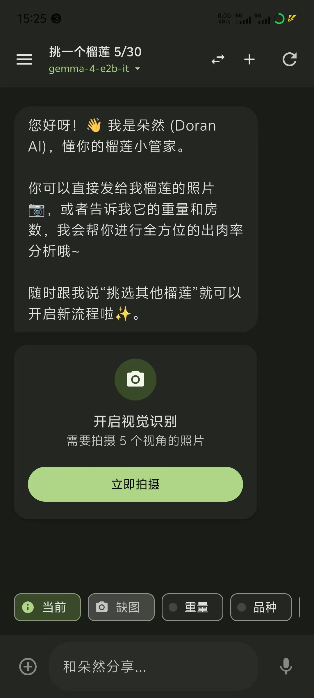
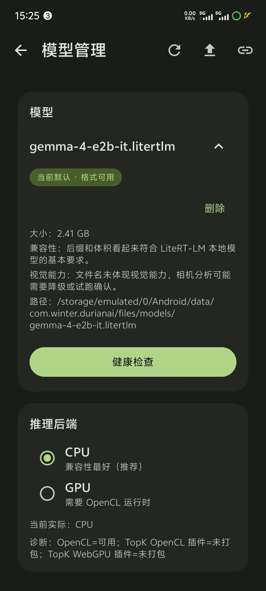
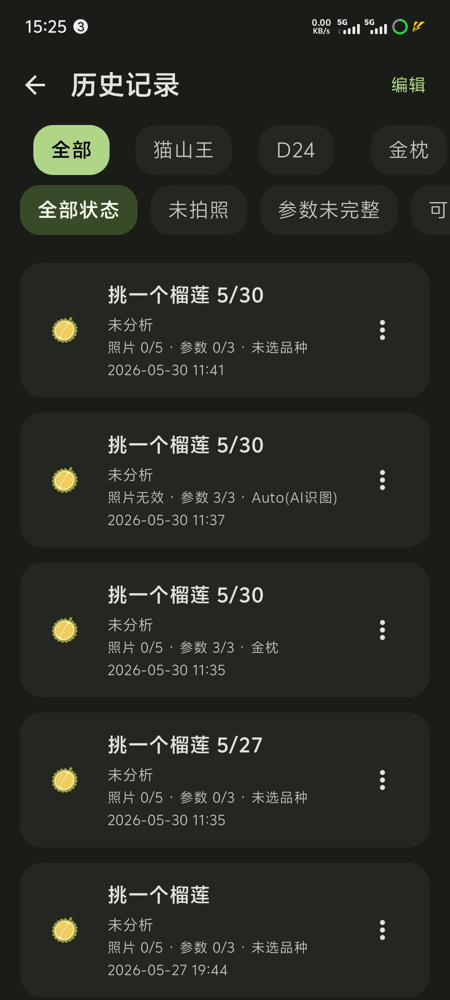
README 和核心文档已直接嵌入本页面。点击左侧文档即可在右侧滚动预览，不需要额外请求 Markdown 文件。